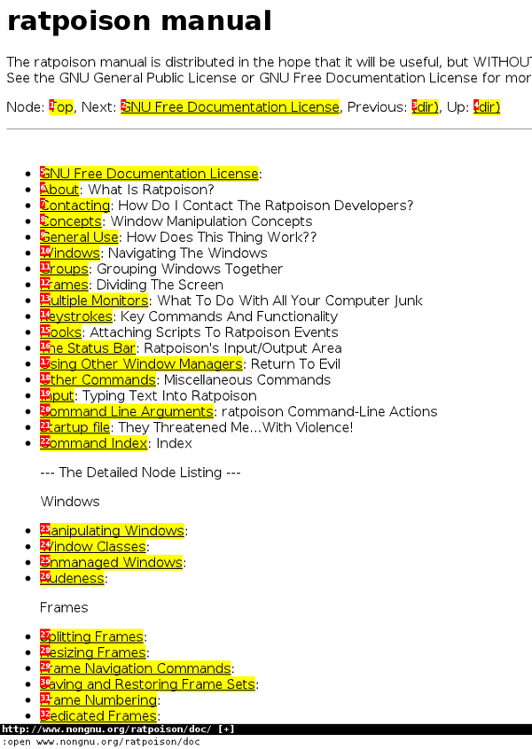

Notice that there are no menus, toolbars, buttons, or scrolling -
just a line at the bottom containing the URL. To open a different page,
type o, and :open should appear at the very
bottom left of the screen. Type:
http://www.nongnu.org/ratpoison/doc/
When the page has loaded, type f and then select a
number to follow a link:

Shift-h takes you back to where you were before.
t works like o but opens the URL in a new window, as
does shift-f instead of f. Pressing TAB
after typing the beginning of a URL will suggest completions taken from
the history; use TAB again to move through the choices (
shift-TAB to go back up) and Enter to select.
O rather than o (and T rather than
t) allows you to edit the URL of the current page - try it.
j and k scroll down and up. Shift-l
moves one page forward in your browsing history. d closes
the current window. For more details, consult man vimprobable2
, as well as the Vimprobable website, see also man vimprobablerc
for configuration options. Note that . and ,
are handy alternatives to f and shift-f.
There are no tabs. In the next section, we will see how Ratpoison allows you to use windows to do the work of tabs, but more informatively.
Note that if the input received by o or t
can't be resolved into a URL, it will be sent to a search engine; the
default is DuckDuckGo. If the first item is i,
s, w, wd, or y, a
different search engine is used in each case. These shortcuts are
described in the Vimprobable man page and may also be customized in the
.vimprobablerc configuration file.
To insert data in forms (for instance, login and password) use tab
till the cursor is in the right place. Another TAB moves
to the next field or link; you may then use ESC to leave
insert mode and return to command mode.
If you find your keystrokes are still being interpreted as browser
commands, which may happen as a result of the way certain sites are
designed, try pressing enter twice instead of just once after typing
f and selecting the number; failing this, try C-z.
The converse problem may arise if you have inadvertently passed
keystrokes to o or t; they will appear at the
very bottom right of the browser window. To ignore them and return to
command mode, clearing the buffer, press ESC.
As described in Vimprobable's man page, it is necessary to create some files for all its features to work:
touch ~/.config/vimprobable/history
though some of these may already be present.